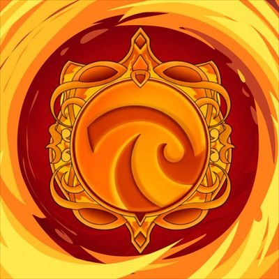

Fanbase Resmi
Fanbase pendukung Ribka Budiman member JKT48 generasi ke-12.
Tentang
Ribcalls adalah fanbase yang dibuat sebagai wadah informasi dan dukungan untuk Ribka Budiman JKT48.
Jadwal
Statistik